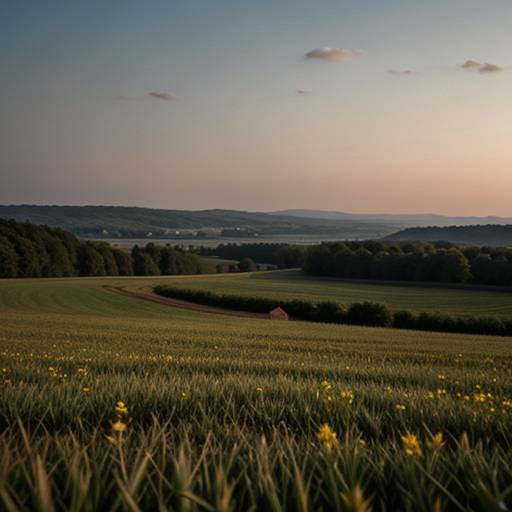

Bienvenido a GreenCode
Somos un grupo de investigación dedicado a promover la sostenibilidad y la tecnología verde. Nuestra misión es encontrar soluciones innovadoras para preservar el medio ambiente y crear un futuro más sostenible para todos.